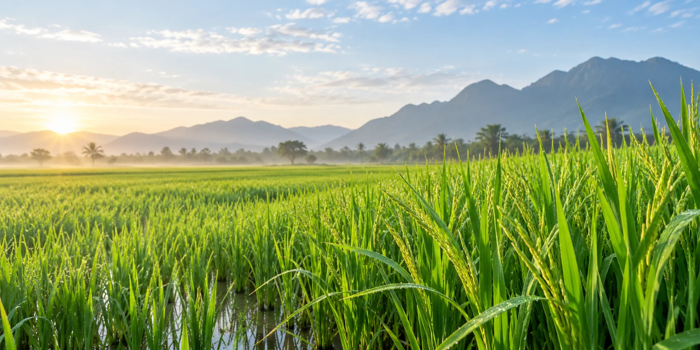
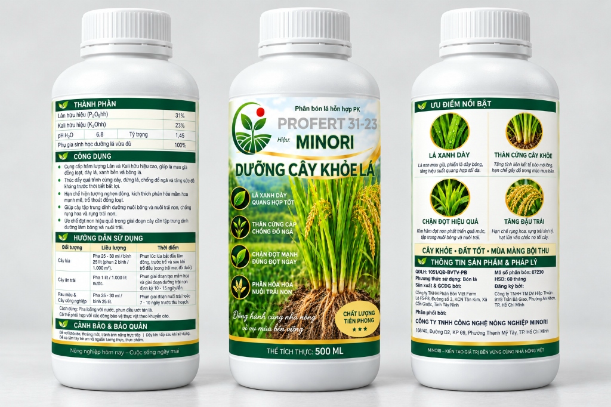

MINORI Dưỡng Cây Khỏe Lá
Vững cây, khỏe lá giữa vụ
Sau khi bén rễ, lúa bước vào đẻ nhánh, mở rộng tán lá và tích lũy sức để chuyển sang làm đòng. MINORI Dưỡng Cây Khỏe Lá là phân bón lá hỗn hợp PK được Minori Agritech định vị cho nhịp phát triển ấy.

MINORI Dưỡng Cây Khỏe Lá
🔍 Phóng toHình ảnh đầy đủ MINORI Dưỡng Cây Khỏe Lá
Ba mặt chai 500 ml: thành phần & hướng dẫn sử dụng, mặt chính và ưu điểm nổi bật.
Giữa vụ, cây lúa cần điều gì?
Khoảng 20–45 ngày sau sạ là khung theo dõi giữa vụ thường gặp; thời điểm thực tế thay đổi theo giống, mùa vụ và điều kiện ruộng.
Đây là lúc cây cần bộ lá hoạt động tốt để tạo chất khô, đồng thời duy trì dinh dưỡng cân đối cho thân, rễ và những nhánh đang hình thành. Thời điểm phun sản phẩm cho lúa cần theo mốc sinh trưởng ghi trên nhãn Minori.
Lân và kali cho giai đoạn giữa vụ
Hàm lượng theo nhãn Minori dự kiến của sản phẩm, tập trung vào phát triển rễ, nhánh và hoạt động của tán lá.
Gắn với quá trình dự trữ, chuyển giao năng lượng trong cây; hỗ trợ rễ phát triển, cây đẻ nhánh và duy trì tốc độ sinh trưởng.
Tham gia điều tiết nước trong tế bào, hoạt động của khí khổng và enzyme; giúp lá duy trì trạng thái thuận lợi cho quang hợp.
Nền dinh dưỡng vững trước chặng làm đòng
“Dưỡng cây khỏe hôm nay để ruộng lúa có nền phát triển vững vàng cho chặng tiếp theo.”
Dưỡng cây đúng nhịp, chăm ruộng bền sức
MINORI Dưỡng Cây Khỏe Lá là lựa chọn bổ sung lân và kali trong chương trình chăm lúa, đi cùng quản lý nước và bón phân gốc cân đối.
Theo dõi ruộng giữa vụ
Quan sát độ đồng đều của ruộng, số nhánh hữu hiệu, diện tích và tình trạng bộ lá. Lá phát triển tốt giúp cây duy trì khả năng đón ánh sáng; nhánh khỏe tạo tiền đề cho giai đoạn hình thành bông.
Phun theo mốc sinh trưởng trên nhãn
Nhãn Minori dự kiến hướng dẫn phun cho lúa từ lúc bắt đầu làm đòng, trước và sau khi trổ đều. Khung 20–45 ngày sau sạ là nhịp quan sát giữa vụ, không phải lịch phun cố định cho mọi giống. [1]
Pha đúng liều, phun đều tán lá
Liều dự kiến trên nhãn: 25–30 ml cho bình 25 lít nước, phun 2 bình/1.000 m², phun đều ướt tán lá. Luôn làm theo liều lượng, thời điểm và cách phun trên nhãn chính thức của sản phẩm.
Kết hợp quản lý nước & phân gốc
Phân bón lá không thay thế kế hoạch bón phân gốc. Cần kết hợp quản lý nước và bón phân cân đối để cây đi qua giai đoạn giữa vụ đều và khỏe.
Câu hỏi thường gặp về MINORI Dưỡng Cây Khỏe Lá
Những thắc mắc phổ biến khi chăm lúa giai đoạn giữa vụ.
1. MINORI Dưỡng Cây Khỏe Lá có thành phần chính nào?
Nhãn Minori dự kiến ghi lân hữu hiệu (P₂O₅) 31% và kali hữu hiệu (K₂O) 23%. Đây là phân bón lá hỗn hợp PK.
2. Lân và kali giúp gì cho cây lúa?
Lân hỗ trợ chuyển hóa năng lượng, phát triển rễ và nhánh; kali góp phần điều tiết nước và duy trì hoạt động quang hợp của lá. Kết hợp hai dưỡng chất giúp cây có nền dinh dưỡng cân đối khi bước vào giai đoạn làm đòng.
3. Khi nào dùng cho lúa?
Theo nhãn Minori dự kiến, thời điểm phun bắt đầu lúc lúa làm đòng, trước và sau khi trổ đều. Cần nhận diện đúng giai đoạn sinh trưởng của giống lúa tại ruộng, thay vì chỉ tính theo số ngày sau sạ.
4. Pha và phun như thế nào?
Hướng dẫn trên nhãn dự kiến ghi 25–30 ml cho bình 25 lít nước, phun 2 bình/1.000 m². Phun đều ướt tán lá và làm theo hướng dẫn trên nhãn chính thức của sản phẩm.